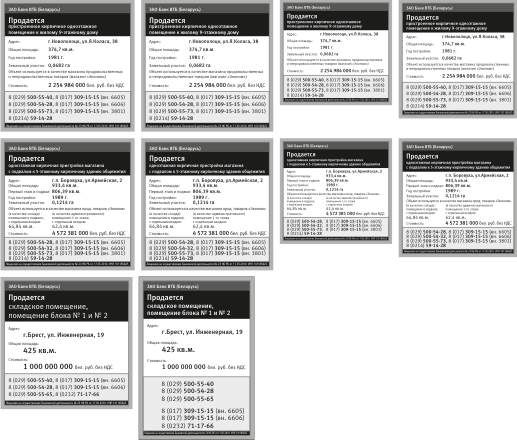

Экспорт визуально обособленных наборов объектов в кучку CDR+превьюшка
wOxxOm / 30.10.2012, 04:26/00:41
Форум:
По аналогу с артбордами люстры в дровах иногда удобно работать с кучей вариантов (например, по размерам) на одном большом листе, а вот экспортировать такое в отдельные файлы скопом ни разу не удобно, поэтому написал для себя такой вот странный макрос.
Итак, оно берет каждый визуально обособленный набор объектов (т.е. предварительно группировать не надо) и сохраняет его в CDR (9й версии в кривых) и рядом делает превьюшку PNG.
Работает в Х3-Х6, по умолчанию валит в исходную папку файлики вида "ИсходноеИмя01 ШиринаxВысота.cdr" и аналогичный png (тип превьюшки - png/jpg настраивается вручную в коде самого макроса т.к. пока у меня нет необходимости делать мордочку).

КЛАСС!
Очень классный макрос !!! Я почти такой и искал . Подскажите можно ли его отредактировать чтоб сохранялось только в TIFF с заданным разрешением . и как можно задать путь куда экспортировать?